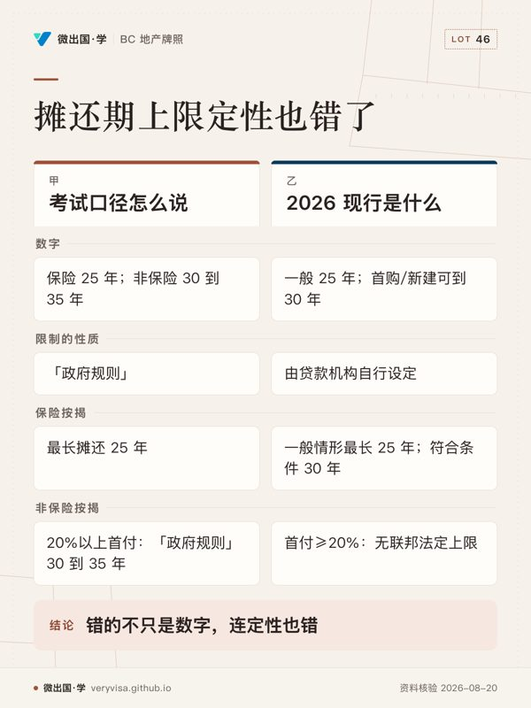

🃏 Flashcards · 3 闪卡 · 3 张 🖼 Slides · 2 幻灯 · 2 页 ✍️ Questions · 10 刷题 · 10 道
按揭金融 mortgage-finance P2 稳住 P2 Hold steady
ZH EN ZH + EN
先看这一章怎么考 First, how this chapter is tested
五变量关系题：给出贷款金额、利率、期数、还款额、到期余额里的四个，考第五个是不是唯一确定，以及利率升高时同样月供能撑起的贷款变小、摊还期拉长则月供变轻但总利息更贵。 Five-variable questions give four of the loan amount, the interest rate, the number of payments, the payment, and the balance at maturity. They test whether the fifth is uniquely determined, and that when the rate rises the loan the same payment can support becomes smaller, while a longer amortization makes the payment lighter but total interest more expensive. 结欠与还款结构题：用卖房核对还欠多少、还了三年本金少了多少、或最后一期略小，考结欠余额是剩余各期还款按合同利率折成的现值，早期利息占大头，完全摊还的尾款不是一大笔到期余额，多付的加速还款是缩短摊还、少付利息。 Outstanding-balance and repayment-structure questions use a sale to check how much is still owed, how much principal is gone after three years, or a last instalment that is slightly smaller. They test that the outstanding balance is the present value of the remaining payments discounted at the contract rate, that interest is the larger share early on, that the final payment on a fully amortized loan is not a large balance due at maturity, and that paying extra as an accelerated payment shortens the amortization and saves interest. 法定提前还款题：用个人或法人、住宅或非住宅、合同期是否超过五年、已过年数、多付的是利息还是本金，考《利息法》s.10 的适用边界。这一层考试口径与现行条文一致。 Statutory prepayment questions use an individual or a corporation, a house or a non-residential property, whether the term is longer than five years, how many years have passed, and whether the extra amount is interest or principal. They test the boundary of Interest Act s.10. On this layer the exam wording matches the current section. 最常丢分的陷阱（看到题干信号就警觉） Traps that cost the most marks (watch for the signal in the stem)
加减法算结欠 Calculating the balance by subtraction 题干问卖房时还欠贷款机构多少，或出现“已经还了三年，本金应该少了一大截”，选项里用贷款金额减去已付月供。 The stem asks how much is still owed to the lender when the property is sold, or it says that after three years of payments a large share of principal must already be gone, and an option subtracts the payments already made from the loan amount. 摊还节奏当成重谈日 Treating the amortization rhythm as the renegotiation date 同一题里同时出现 amortization 和 term，并问合同到期还欠不欠、利率要不要重谈、月供是按哪一个年限算的。 The same item contains both amortization and term, and asks whether anything is still owed when the contract ends, whether the rate must be renegotiated, and which of the two periods the payment is calculated on. 利息法对象看宽 Reading the Interest Act's protected class too widely 借款人是公司，合同期写五年整或更短，已过年数不足五年，物业不是住宅，或选项把代价写成三个月本金。 The borrower is a company, the term is written as five years exactly or shorter, fewer than five years have passed, the property is not a house, or an option writes the extra charge as three months of principal. 本章考点页：导图、要点表、7 道带逐项解析的练习 →
本章地位 ：接着 ch13 讲。ch13 已经把名义利率 j_m、周期利率 i、等价年利率 EAR 之间的换算原理讲清楚，
本篇不重复那套推导 ——需要复习换算方法，回 ch13 第七节。
本篇要回答的是换算之后的问题：这个利率套进一笔具体的按揭，每月还多少、提前还清要付多少、
合同到期时还欠多少 ；以及考试口径完全没有覆盖的一整层——2020 年之后，联邦监管者用什么规则
强制贷款机构把这些数字讲清楚给借款人 。核实日期：2026-09-05 ，出处见文末源表。
一、考试口径在算一道数学题，现行法在管一道披露题 本节回答 This section answers 卷面考变量关系，现行管披露 The paper tests the relationship among the variables, and current law governs disclosure.
考试口径这一章的英文标题叫"Interest Rates and Mortgages"，内容其实是一套计算工具 ：
给定贷款金额、利率、摊还期、还款频率里的任意四个，算出第五个；再往下延伸到结欠余额
（outstanding balance，OSB）、本息拆分 （每一期还款里有多少是利息、多少是本金）、
尾款 （final payment）、加速还款 （accelerated payment）。这几件事本身是数学关系 ，
不会因为哪部法律修订就改变——本金、利率、期数、还款额之间的关系,2020年和2026年是同一套公式。
这套数学题考场上要会，但柜台上更常被问到的，是谁来管这些数字的"披露方式"和"提前还钱要罚多少"。
考试口径完全没有涉及 2020 年后联邦政府对按揭合同披露与提前还款罚金规则的一整层重构——
这层规则在真实的柜台工作里，比任何一道摊还表计算都更常被客户问起。
ℹ️
这一篇不教你按计算器
考试口径原文逐题给出 HP 10bII+ 计算器的按键顺序。本篇讲的是每个变量之间的关系和为什么 ，
不重复计算器操作——那是持牌按揭经纪与贷款机构的专业范围，持牌地产代表的职责是
理解这些关系如何影响客户的选择 ，不是替客户按计算器出具精确数字（ch13 已经提醒过一次，
这条纪律在按揭金融五章里贯穿始终）。
节末检索小测 · 先别往回翻，凭记忆作答 Quick recall check: answer from memory before scrolling back
A candidate asks which part of this chapter is a calculation that the exam still tests, and which part is a later disclosure regime the course chapter does not cover. Which statement matches the lecture?
考生问：这一章里，哪一部分是考试仍要考的计算，哪一部分是课程章节没有覆盖的后来披露制度。哪一项符合讲义？
a Both layers were replaced in 2022, so the exam no longer tests the link among principal, rate, number of payments, and payment. ✗ 错误。这是把数学关系和披露规则绑成同一层的陷阱。本金、利率、期数、还款额之间的关系是数学关系，2020年和2026年是同一套。披露规则后来重构，并没有废掉这套计算。 Wrong. This is the trap of tying the mathematical relationship and the disclosure rules into one layer. The relationship among principal, rate, number of payments, and payment is a mathematical relationship, and it is the same set in 2020 and in 2026. The disclosure rules were rebuilt later. That rebuild did not abolish this calculation.
b The exam chapter tests the calculation, which disclosure law does not change; the later federal disclosure regime is outside this chapter. ✓ 正确。考试这一章是一套计算工具：贷款金额、利率、摊还期、还款频率里已知四个，可以确定第五个，并延伸到结欠余额（outstanding balance）、本息拆分、尾款（final payment）和加速还款（accelerated payment）。现行法另外管这些数字怎么披露、提前还钱怎么说明，那一层是2020年后的联邦重构，考试口径没有写。 Correct. This exam chapter is a set of calculation tools. Given four among the loan amount, the rate, the amortization period, and the payment frequency, the fifth can be determined, and the same tools extend to the outstanding balance, the split between principal and interest, the final payment, and the accelerated payment. Current law separately governs how these figures are disclosed and how an early payout is explained. That layer is a federal rebuild after 2020, and the exam wording does not state it.
c The exam chapter tests only the information box, so a candidate who can list disclosure items need not learn the five-variable relationship. ✗ 错误。这是把现行披露当成卷面计算题的陷阱。信息框（information box）是现行联邦披露要求，不是这一章考试口径的得分点。考试要会的是变量之间的数学关系。 Wrong. This is the trap of treating current disclosure as the calculation item on the paper. The information box is a current federal disclosure requirement. It is not a scoring point in this chapter's exam wording. What the exam requires is the mathematical relationship among the variables.
d Current law requires the licensee to key a precise payout figure for the client, and the exam tests that calculator result rather than the relationship. ✗ 错误。这是替客户出具精确数字的陷阱。持牌地产代表要理解这些关系怎样影响客户的选择，不替客户按计算器出数。精确结欠和罚金要由贷款机构书面确认。 Wrong. This is the trap of issuing a precise figure for the client. A licensed real estate representative must understand how these relationships affect the client's choices, and does not produce a calculator figure for the client. The precise outstanding balance and the precise penalty must be confirmed in writing by the lender.
看答案与每个选项的解析 Show the answer and why each option is right or wrong 答案 Answer ：b
二、五个变量，一套关系：贷款金额、利率、期数、还款额、到期余额 本节回答 This section answers 四个已知量锁死第五个 Four known amounts lock the fifth. 本章考题 1 Question 1 本章考题 2 Question 2 本章考题 4 Question 4
一笔等额本息按揭（constant payment mortgage）身上有五个互相绑定的变量：贷款金额 （PV，
现值）、利率 （换算成与还款频率一致的周期利率后使用，换算方法见 ch13）、摊还期 （N，
用还款期数表示，"25 年、按月还"＝300 期）、每期还款额 （PMT）、到期时的余额 （FV，
完全摊还的按揭到期 FV = 0）。已知其中四个，第五个是唯一确定的——这也是为什么"利率一变，
最高能借多少"或者"利率一变，月供涨多少"这类问题永远有唯一答案，不是估出来的。
这套关系解释了三件实务上天天会被问到的事：
1. 利率越高，同样的月供能撑起的贷款越小。 借款人手上能承受的月供是固定的（比如
$2,000/月），利率涨了，这笔钱里能流向本金的部分就变少，能借的总额也就跟着缩水。
这不是"银行故意刁难"，是同一个数学关系的两个方向。
2. 摊还期拉长，月供变轻，但总利息变贵。 ch13 已经点过这条方向性关系，这里补一句：
摊还期只决定"还款的节奏"，不决定"合同多久要重谈一次" ——那是合同期（term），
两者是完全独立的两个变量（ch13 第六节已展开，此处不重复）。
3. 结欠余额（OSB）不是"本金减去已还本金"这么简单算的，而是"剩下那些期的还款，
按合同利率折算成今天值多少钱"。 这个视角很重要：卖房时中介和客户核对"还欠银行多少"，
本质上问的是这笔未来现金流现在值多少钱，不是简单的加减法。
⚠️
"还了三年的房贷，是不是已经还了一大截本金"
等额本息结构下，早期的还款里利息占大头，本金占小头 ；到了后期这个比例才反过来。
三年期满时的结欠余额，往往只比原始贷款金额少了个位数百分比——这条不是变化的规则，
是等额本息公式本身的数学性质，考试口径©2020和2026现行完全一致，但客户经常凭直觉以为
"还了三年应该还了不少"，需要主动纠正这个直觉。
节末检索小测 · 先别往回翻，凭记忆作答 Quick recall check: answer from memory before scrolling back
A constant-payment mortgage is fully amortized over 25 years of monthly payments. In the five-variable relationship, how many payments is that, and what is the balance when the amortization finishes?
一笔等额本息按揭按25年、每月还款做完全摊还。在五个变量的关系里，这是多少期？摊还结束时余额是多少？
a It is 300 payments, and the balance at the end of a fully amortized mortgage is zero. ✓ 正确。期数（N）按还款次数计，“25年、按月还”等于300期。完全摊还的到期余额（FV）等于零。已知其余变量时，这个余额不是估出来的。 Correct. The number of payments (N) is counted as the number of instalments. Twenty-five years of monthly payments equals 300 payments. The balance at maturity (FV) on a fully amortized mortgage equals zero. When the other variables are known, that balance is not an estimate.
b It is 25 payments, and the balance at the end equals the original principal. ✗ 错误。这是“第五个被估掉”里把年数当成了期数。25是年数，不是期数。“25年、按月还”等于300期。完全摊还结束时余额是零，不是把原始本金原样留到最后。 Wrong. This is the trap of estimating the fifth variable, and it treats the number of years as the number of payments. 25 is the number of years, not the number of payments. Twenty-five years of monthly payments equals 300 payments. At the end of full amortization the balance is zero. The original principal is not left unchanged until the end.
c It is 300 payments, and one full regular payment is deliberately left unpaid at the end. ✗ 错误。这是“尾款当成气球款”的轻量版。完全摊还的设计就是期末余额为零。最后一期可以略小于常规还款，那是尾款（final payment），不是故意留下一整期没还。 Wrong. This is a lighter form of treating the final payment as a balloon. Full amortization is designed so the balance at the end is zero. The last instalment may be slightly smaller than a regular payment. That is the final payment. It is not one whole period deliberately left unpaid.
d It is 12 payments, and the lender may set any ending balance without using the rate. ✗ 错误。这是“第五个被估掉”陷阱。12是一年的月数，不是25年的期数。到期余额和利率都在五个互相绑定的变量里，不能抛开利率随意指定。 Wrong. This is the trap of estimating the fifth variable. 12 is the number of months in one year, not the number of payments in 25 years. The balance at maturity and the rate are both among the five variables locked together. The balance cannot be set at will while the rate is left out.
看答案与每个选项的解析 Show the answer and why each option is right or wrong 答案 Answer ：a
三、提前还款的三层规则叠在一起（考试口径只写了最底下那一层） 本节回答 This section answers 卷面只写满五年那一层 The paper states only the layer that applies after five years. 本章考题 3 Question 3
图：按揭提前还款三层规则——法定兜底、合同额度与超额罚金依次判断。第一层的《利息法》s.10 不限住宅：凡约定五年以上才到期的不动产按揭，满五年后都适用（公司借款人除外）
客户问"我能不能提前把房贷还清，要付多少钱"，答案其实叠了三层，从底往上：
第一层（法定兜底）：《利息法》s.10。 约定五年以上才到期的按揭（不限住宅），自按揭日期满五年后，个人借款人 （法人借款人
不适用）有权随时提前还清全部欠款，只需额外支付三个月利息作为代价——《利息法》2008-06-18
最后修订后这一条现行未变（Justice Laws Website（laws-lo… ）。这一层是法定最低保障 ：只要合同期超过五年，
不管合同怎么写，满五年后个人借款人都能拿到这条权利；合同期五年及以内的按揭用不上这一层。
第二层（合同约定）：提前还款额度（prepayment privilege）。 大多数封闭式按揭的合同里
会写明借款人每年可以在不受罚 的前提下，额外还多少钱——比如"每年可增加月供一定百分比"
或"每年可一次性偿还原始贷款金额的一定百分比"。这个额度因贷款机构而异，不是法定统一值，
用不完通常也不能结转到下一年 （Financial Consumer Agency of… ）。
第三层（超出额度的罚金）：两种算法取高者。 一旦提前还款金额超出合同给的免罚额度
（或者是转按揭、提前解约这类整笔清偿的情形），贷款机构通常按两种算法里更高的那个 收罚金：
三个月利息 ：用结欠余额乘以合同年利率，再除以四；利率差额（Interest Rate Differential, IRD） ：合同利率比当前市场利率高、
且签约不满五年时，贷款机构通常会用这个算法——它比较的是"按合同利率"与"按当前
可比期限的市场利率"两种情形下，剩余合同期内的利息总额，两者之差就是 IRD。
IRD 的精确算法因贷款机构而异，联邦监管机构没有规定统一公式 ——有的机构用签约时的
"挂牌利率"作比较基准，有的用借款人实际拿到的"折扣利率"；有的用当前挂牌利率作对比，
有的再扣掉当初的折扣幅度。这意味着同样一笔贷款，换一家银行算，罚金可能不一样 （Financial Consumer Agency of… ）。
✕
开放式按揭随时能提前还，封闭式按揭超额度提前还要挨这两层算法
开放式（open） 按揭没有这套罚金体系，随时能全额或部分提前还清，最多收一笔小额手续费；
封闭式（closed） 按揭才有"额度内免罚、额度外取高罚"这套结构。客户问"我这笔按揭提前
还有没有罚金"，第一步永远是先确认开放还是封闭，不是直接套罚金公式。
案例二：两种罚金算法，谁高谁低不是凭感觉
Ethan 两年半前签了一笔 5 年期封闭式按揭，合同年利率 5.50%，现在还剩 30 个月到期，
结欠余额约 $350,000。他想现在整笔清偿转到另一家利率更低的银行。当前贷款机构对剩余期限（约 2.5 年，
最接近的可比期限报价约 30 个月）的挂牌利率是 4.00%。两种算法分别是多少？
方法一：三个月利息
= 结欠余额 × 合同年利率 ÷ 4
= $350,000 × 5.50% ÷ 4
= $4,812.50
方法二：利率差额（IRD，简化算法）
利率差 = 合同利率 − 当前可比期限挂牌利率 = 5.50% − 4.00% = 1.50%
IRD = 结欠余额 × 利率差 × 剩余期限（年）
= $350,000 × 1.50% × (30 ÷ 12)
= $350,000 × 1.50% × 2.5
= $13,125
两者取高者：$13,125（IRD）。 因为 Ethan 的合同利率明显高于当前市场利率、且签约不满
五年，贷款机构大概率会用 IRD 算法——这正是 IRD 通常出现的两个前提条件同时成立的情形。
如果 Ethan 的合同签了超过五年，或者当前市场利率反而比合同利率更高，两个算法的高低关系
可能反过来，甚至可能直接落进《利息法》s.10 的"满五年只需三个月利息"那道口子里。
🔧
给客户的动作，不是替客户套这道公式
IRD 的算法因贷款机构而异，记住两句原理就够用：利率差乘剩余期限 ，方向是"合同利率越高于当前市场、
剩余期限越长，IRD 越大"。到了真客户面前，你的动作是提醒客户联系贷款机构书面确认
实际罚金金额 （可以通过贷款机构官网的罚金计算器估算），而不是自己套公式给出精确数字——
每家机构的具体算法细节都不一样，算错一个数字、客户据此做了决定，责任由你承担。
节末检索小测 · 先别往回翻，凭记忆作答 Quick recall check: answer from memory before scrolling back
An exam item asks which early-payout rule this course chapter states. The choices mix that rule with later lender practice. Which statement is the exam answer?
一道考题问：这一章的课程写下了哪一条提前清偿规则。选项把该规则和后来的机构做法混在一起。按考试口径，应当选哪一项？
a The chapter states one federal formula that always charges the higher of three months' interest and the interest rate differential. ✗ 错误。这是“先套罚金公式”用在卷面上。考试口径完全没有提前还款罚金的具体算法。三个月利息等于结欠余额乘合同年利率再除以四，再与利率差额（Interest Rate Differential，IRD）取高，是现行机构通常做法，而且利率差额没有联邦统一公式。 Wrong. This puts the penalty formula onto the paper. The exam wording has no specific formula for a prepayment penalty at all. Three months' interest equals the outstanding balance times the contract annual rate divided by four, and institutions now usually charge the higher of that amount and the Interest Rate Differential (IRD). There is no single federal formula for the interest rate differential.
b The chapter states one statutory percentage that every closed mortgage must allow as a penalty-free privilege each year. ✗ 错误。这是把合同额度当成法定统一值的陷阱。免罚提前还款额度（prepayment privilege）因机构而异，不是法定统一百分比，用不完通常也不能结转到下一年。考试这一章没有把额度写成一条统一法律。 Wrong. This is the trap of treating a contractual allowance as one statutory percentage. The prepayment privilege differs by institution. It is not one statutory percentage, and what is unused usually cannot be carried forward to the next year. This exam chapter does not write the privilege as one uniform statute.
c Only the statutory floor: after five years, an individual may repay a mortgage due more than five years out by adding three months' interest. ✓ 正确。考试口径只写了最底下那一层：《利息法》（Interest Act）s.10。约定五年以上才到期的，自按揭日期满五年后，个人可以还清全部欠款，额外只付三个月利息。考试口径与现行条文一致，这一条自2008-06-18后没有再变。其上的合同额度和超额罚金不是这道题的卷面答案。 Correct. The exam wording states only the bottom layer, Interest Act s.10. Where the mortgage is not payable until more than five years have passed, from the fifth anniversary of the mortgage date an individual may repay the entire amount owing by paying only an extra three months' interest. The exam wording matches the current section, and this section has not changed again since 2008-06-18. The contractual privilege above that layer, and the penalty on the excess, are not the answer on this paper.
d The chapter states that a company has the same right as an individual, and that the extra sum is three months of principal. ✗ 错误。这是“利息法对象看宽”陷阱。法人借款人适用不上 s.10，代价是三个月利息，不是三个月本金。 Wrong. This is the trap of reading the Interest Act's protected class too widely. A corporate borrower cannot use s.10. The extra amount is three months' interest, not three months of principal.
看答案与每个选项的解析 Show the answer and why each option is right or wrong 答案 Answer ：c
四、固定利率 vs 浮动利率：现行披露多了考试口径没有的一层——trigger rate 本节回答 This section answers 考试不把触发利率当得分点 The exam does not treat the trigger rate as a scoring point.
ch13 已经讲过固定/浮动的基本机制：固定利率合同期内不变；浮动利率跟着贷款机构的
prime 利率 走，prime 利率又跟着 Bank of Canada 政策利率 走（这条链条是机制性的，
本身不会过时，但具体数字永远查当期公告，不写死 ）。这一节要补的是浮动利率按揭里一个
考试口径完全没有的现行概念——trigger rate（触发利率） 。
浮动利率按揭大多采用"利率浮动、月供先固定 "的结构：利率涨了，不是立刻涨月供，
而是先调整同一笔固定月供里本金和利息的占比 。这就带出一个现行监管要求联邦贷款机构
必须在合同里写明的数字：trigger rate ——月供恰好只够覆盖当期应计利息、一分钱都
不再流向本金的那个利率点。一旦利率涨过这个点，客户的按揭就开始负摊还 （本金不减反增），
贷款机构现行有权要求客户提高月供，确保能在原定摊还期内还清（Financial Consumer Agency of…（1 、2（论坛解读） ））。
这不是纸上谈兵 ：2022–2024 年 Bank of Canada 连续加息期间，大批在 2020–2021 年
超低利率时段签下"浮动利率固定月供"按揭的借款人，真实撞上了这条门槛——这正是考试口径©2020
成书时完全无法预见、也确实没有写的一段真实市场史。
案例一：固定 vs 浮动，月供差多少、浮动这一笔的 trigger rate 在哪
Priya 打算借 $500,000，25 年摊还、按月还款。贷款机构 A 给固定利率报价 j₂ = 5.20%
（按半年复利，按《利息法》s.6 要求披露）；贷款机构 B 给浮动利率初始报价 j₂ = 4.60%
（同样按半年复利披露，但会随 prime 利率浮动）。换算成月复利周期利率的方法与 ch13 相同，
这里只给结果：
固定：j₂ = 5.20% → 换算后 j₁₂ ≈ 5.1445%
月供 = $2,965.21
浮动（签约时）：j₂ = 4.60% → 换算后 j₁₂ ≈ 4.5565%
月供 = $2,795.23
签约当天，浮动比固定每月少还约 $169.98 ——这符合"贷款机构把未来利率变动的风险
转嫁给借款人，所以浮动初始报价通常更低"的一般规律（ch13 已提到）。
现在算 Priya 这笔浮动利率按揭的 trigger rate：她的月供固定在 $2,795.23，
签约当天结欠余额就是原始贷款额 $500,000。trigger rate 的算法是"倒推出哪个周期利率
恰好让当期利息＝当期月供"，再换算回合同披露用的 j₂ 基准：
月度触发周期利率 = 月供 ÷ 当前结欠余额 = $2,795.23 ÷ $500,000 ≈ 0.5590%
换算成合同披露用的 j₂ ≈ 6.80%
换句话说，Priya 这笔浮动利率按揭的合同利率如果从签约时的 j₂ = 4.60% 涨到约 j₂ = 6.80%，
她固定不变的月供就正好只够付利息，一分钱都不再还本金。 涨过这个点，负摊还开始。
需要特别说明的是：trigger rate 不是签约当天定死不动的一个数 ——结欠余额每还一期就减少
一点，同样的月供能覆盖的利息上限也跟着变化，trigger rate 会随时间小幅走高。上面算的是
放款当天的起始值，用来建立直觉，不是贷款机构合同里逐月更新的准确值——那必须由贷款机构
自己按当期结欠余额书面确认。
⚠️
"浮动利率月供固定，是不是等于我不用管加息"
恰恰相反：月供固定不代表还款结构固定 。加息期间月供表面上没变，
但本金偿还的速度在悄悄变慢，甚至倒退。客户如果只看"月供有没有涨"来判断加息有没有影响他，
会完全漏掉负摊还这件事——这正是 trigger rate 这个概念存在的意义。
节末检索小测 · 先别往回翻，凭记忆作答 Quick recall check: answer from memory before scrolling back
A variable-rate mortgage keeps the payment fixed while the rate moves. The payment now covers only the interest then owing. An exam item written to the course manual asks the candidate to name that threshold with a course term. Which statement is the exam answer?
一笔浮动利率按揭在利率变动时月供先不变。现在月供只够支付当时的利息。一道按课程手册拟的考题要求用课程里的术语给这个门槛命名。按考试口径，应当选哪一项？
a The manual's term is trigger rate, and every variable-rate item expects a negative-amortization calculation from the candidate. ✗ 错误。这是把现行概念当成卷面术语的陷阱。触发利率（trigger rate）和负摊还（negative amortization）是现行披露概念：月供恰好只够付利息的那个点，再涨则余额不减反增。考试口径这一章没有这个术语。 Wrong. This is the trap of treating a current concept as a term on the paper. The trigger rate and negative amortization are current disclosure concepts: the point where the payment is exactly enough to cover the interest, and past that point the balance rises instead of falling. This chapter's exam wording has no such term.
b The manual does not name that threshold. This course chapter has no trigger-rate term for the candidate to apply. ✓ 正确。考试口径完全没有触发利率（trigger rate）这个术语，卷面不能用它作答。现行规则才要求联邦机构披露它：固定月供恰好只够付利息的那个点，涨过该点就开始负摊还（negative amortization）。浮动利率跟着 prime、prime 跟着加拿大银行政策利率，是另一层既有机制，具体数字不写死。 Correct. The exam wording has no term for the trigger rate, so the paper cannot be answered with it. Only the current rule requires a federal institution to disclose it: the point where a fixed payment is exactly enough to cover the interest, and past that point negative amortization begins. A variable rate follows prime, and prime follows the Bank of Canada's policy interest rate. That is a separate mechanism already in place, and no specific figure is fixed.
c The manual's term is the interest rate differential, and a fixed payment means the borrower must pay that differential at once. ✗ 错误。这是“先套罚金公式”陷阱。利率差额（Interest Rate Differential，IRD）是提前还款罚金的一种算法，不是月供只够付息的那个利率点。月供暂时不变，也不等于立刻要付一笔罚金。 Wrong. This is the trap of reaching for the penalty formula first. The Interest Rate Differential (IRD) is one way to calculate a prepayment penalty. It is not the rate at which the payment covers only the interest. A payment that stays the same for the time being is not the same as a penalty that must be paid at once.
d The manual's term is blend-and-extend, and a fixed payment means the rate itself cannot move for the whole amortization. ✗ 错误。这是把到期前的改约路径当成利率门槛的陷阱。混合展期（blend-and-extend）是把旧利率和新利率按时间加权混合并延长合同。月供先固定，不表示利率被锁死到整个摊还期结束。 Wrong. This is the trap of treating a path used before maturity as the rate threshold. Blend-and-extend blends the old rate and the new rate by time and lengthens the contract. A payment that is fixed first does not mean the rate itself is locked until the whole amortization ends.
看答案与每个选项的解析 Show the answer and why each option is right or wrong 答案 Answer ：b
五、Financial Consumer Protection Framework：考试口径完全没有的整层披露监管 本节回答 This section answers 卷面披露只考利息法复利 Disclosure on the paper tests only compounding under the Interest Act.
上面提到的信息框、trigger rate 披露、罚金算法说明，都来自同一套现行联邦规则——
《金融消费者保护框架条例》 （Financial Consumer Protection Framework Regulations,
SOR/2021-181），2022-06-30 起生效 （第1至98条），依据是《银行法》Part XII.2。
它整体取代了原来的《借贷成本（银行）条例》 （Cost of Borrowing (Banks) Regulations,
SOR/2001-101）——那部条例已于2022-06-29 被正式废止（Justice Laws Website（laws-lo… 、Justice Laws Website（laws-lo… ）。
考试口径©2020 在这一章只提到《利息法》s.6 的复利披露要求，对这整套 2022 年才落地的框架
完全没有涉及。
现行规则要求联邦监管贷款机构（银行、联邦信用社）在合同、申请表或独立文件里，
用一个单独、集中、显著位置的"信息框" 披露以下内容：
浮动利率按揭还要额外披露 初始年利率、利率计算方法与计算日期；浮动利率固定月供
按揭 还要在合同或披露文件里额外写明 trigger rate 本身，以及"利率上升会拉长还款
时间"的提醒（Financial Consumer Agency of… ）。合同中途变更 须在变更后30天内 书面通知；
续约 信息须在合同到期前至少21天 披露，且贷款机构如果不打算续约，
同样要提前21天通知——这给了借款人足够的窗口去货比三家（Financial Consumer Agency of… ）。
ℹ️
这套披露权利只保护联邦监管机构的客户
《金融消费者保护框架条例》管的是联邦监管金融机构 （银行、联邦信用社）。
BC本地的信用社走的是省级监管框架，私人贷款人、MIC更是完全在这套联邦披露体系之外。
客户手上的按揭是哪家机构放的，直接决定他能不能援引这一整套披露权利——这一点
联邦规则本身没有把标准统一到全市场，持牌代表遇到客户问"我这份合同披露得够不够"，
第一步要先确认贷款机构受哪一层监管。
节末检索小测 · 先别往回翻，凭记忆作答 Quick recall check: answer from memory before scrolling back
The course chapter on interest rates and mortgages mentions one federal rule about how a mortgage interest rate must be stated. An exam item asks what that chapter requires. Which statement is the exam answer?
利率与按揭这一章的课程只提到一条关于按揭利率必须怎样写明的联邦规则。考题问这一章要求的是什么。按考试口径，应当选哪一项？
a The rate must be disclosed as an annual or semi-annual compound rate. The chapter does not test the later information-box framework. ✓ 正确。考试口径这一章只提到《利息法》（Interest Act）s.6：利率须按年或按半年复利披露，否则一分利息都不能收。现行《金融消费者保护框架条例》自2022-06-30起生效，并取代了2022-06-29废止的《借贷成本（银行）条例》，那一整层信息框披露不是这道题的卷面答案。 Correct. This chapter's exam wording mentions only Interest Act s.6: the rate must be disclosed as compounded annually or semi-annually, or else no interest at all may be collected. The current Financial Consumer Protection Framework Regulations took effect on 2022-06-30 and replaced the Cost of Borrowing (Banks) Regulations, repealed on 2022-06-29. That whole layer of information-box disclosure is not the answer on this paper.
b The chapter requires the information box, a 21-day renewal notice, and a written notice within 30 days after a mid-term change. ✗ 错误。这是把现行披露时限当成卷面答案的陷阱。信息框、到期前至少21天的续约或不续约通知、合同中途变更后30天内的书面通知，都是现行联邦机构的规则。考试口径没有这套框架，卷面不能用这些时限替换《利息法》s.6。 Wrong. This is the trap of treating current disclosure time limits as the answer on the paper. The information box, notice of a renewal or a non-renewal at least 21 days before maturity, and a written notice within 30 days after a mid-term change, are all current rules for a federal institution. The exam wording has no such framework. The paper cannot replace Interest Act s.6 with these time limits.
c The chapter requires the trigger rate to be printed beside every interest rate, including a fixed rate. ✗ 错误。这是把现行触发利率（trigger rate）写进考试披露题的陷阱。考试口径没有这个术语。现行也只要求浮动利率、月供固定的按揭额外披露它，不是所有固定利率旁边都要印这个点。 Wrong. This is the trap of writing the current trigger rate into an exam disclosure item. The exam wording has no such term. The current rule also requires the extra disclosure only on a variable-rate mortgage whose payment is fixed. The point does not have to be printed beside every fixed rate.
d The chapter allows interest to be collected even when the contract never states whether compounding is annual or semi-annual. ✗ 错误。这是把《利息法》s.6 的后果看反的陷阱。不按年或按半年复利披露，一分利息都不能收。漏写复利方式不是可以照收利息的理由。 Wrong. This reverses the consequence of Interest Act s.6. If the rate is not disclosed as compounded annually or semi-annually, no interest at all may be collected. Leaving out the compounding method is not a ground on which interest may still be collected.
看答案与每个选项的解析 Show the answer and why each option is right or wrong 答案 Answer ：a
六、摊还期上限：考试口径那句话不只数字过时，连"是政府规定"这个定性都错了 本节回答 This section answers 低首付保险按揭卷面写25年 The paper states 25 years for a low-down-payment insured mortgage. 本章考题 5 Question 5
考试口径ch14"计算摊还期"一节写道（原文大意）：保险按揭最长摊还25年，首付达到或超过
20%的非保险按揭，政府规则允许30到35年 。这句话现行看有两处问题，不只是数字变了：
第一处（数字与细分变了） ：首付低于20%（需要按揭违约保险）的按揭，一般情形
现行仍是最长25年，但符合首次购房者身份和/或购买新建物业条件的可以做到30年
——这是考试口径完全没有的一项现行细分豁免：2024-08-01 先开给「首次购房者买新建房」，
2024-12-15 扩到全部首次购房者与全部新建房买家（细节见 ch17）。
第二处（定性本身就有误导，比数字过时更严重） ：首付达到或超过20%（不需要强制
按揭保险）的按揭，联邦层面根本没有一个统一的法定摊还期上限 ——现行规则是
由贷款机构自行设定 这个上限（Financial Consumer Agency of…（论坛解读） ）。考试口径把"贷款机构常见的行业做法"
写成了"政府规定30到35年"，这个说法本身站不住脚，不是简单的"数字从30改成别的数"
就能修正的问题。
⚠️
"20%首付以上的按揭最长35年，是不是法律写死的"
不是。 这条从来都不是联邦法定天花板，是各家贷款机构自己定的商业政策。
有的机构给到35年，有的更保守；这个数字会随利率环境、贷款机构风险偏好调整，
不需要修法。历史题 只有明确限定 ©2020 版本时，才复述旧版的25年/30-35年；
实务 上给客户讲这件事，必须讲清楚≥20%首付那一段根本没有统一上限，
具体年限要问贷款机构，不能替客户断言"最长35年"。
节末检索小测 · 先别往回翻，凭记忆作答 Quick recall check: answer from memory before scrolling back
An exam item is limited to the course manual. The buyer will put down less than 20 percent, so the mortgage needs default insurance. The item asks for the maximum amortization the manual states. Which selection is the exam answer?
一道考题限定按课程手册作答。买方首付低于20%，按揭需要违约保险。题目问手册写的最长摊还期是多少。按考试口径，应当选哪一项？
a 30 years, because the manual already gives every insured mortgage the later first-time and new-build extension. ✗ 错误。这是“旧上限当现行法”陷阱。首次购房和/或新建可以到30年，是现行细分，考试口径完全没有。卷面这道低首付保险按揭题不能改答30年。 Wrong. This is the trap of treating the old cap as current law. Thirty years for a first-time buyer and/or a new build is a current distinction. The exam wording does not contain it. This item on the paper, about a low-down-payment insured mortgage, cannot be answered as 30 years.
b 25 years. The manual states that an insured mortgage has a maximum amortization of 25 years. ✓ 正确。考试口径写保险按揭最长摊还25年。现行规则不同：首付低于20%一般仍是最长25年，但符合首次购房者身份和/或购买新建物业的可以到30年。 Correct. The exam wording states that an insured mortgage has a maximum amortization of 25 years. The current rule is different: a down payment below 20 percent is still generally a maximum of 25 years, but a buyer who qualifies as a first-time buyer and/or who is buying a new build can go to 30 years.
c 35 years, because the manual's government range of 30 to 35 years applies whenever insurance is required. ✗ 错误。这是“旧上限当现行法”里把两段年限对调了。考试口径把30到35年写在首付达到或超过20%的非保险按揭上。需要保险的这道题，手册写的是25年。 Wrong. This swaps the two bands inside the trap of treating the old cap as current law. The exam wording puts 30 to 35 years on an uninsured mortgage with a down payment of 20 percent or more. On this item, where insurance is required, the manual states 25 years.
d No maximum appears in the manual, because the manual says each lender sets the amortization for an insured mortgage. ✗ 错误。这是“旧上限当现行法”陷阱。没有联邦法定上限、由贷款机构自定，说的是现行规则下首付达到或超过20%的非保险按揭，不是手册对保险按揭的写法。 Wrong. This is the trap of treating the old cap as current law. No federal statutory maximum, with the lender setting its own, describes an uninsured mortgage with a down payment of 20 percent or more under the current rule. It is not how the manual states an insured mortgage.
看答案与每个选项的解析 Show the answer and why each option is right or wrong 答案 Answer ：b
七、合同到期怎么办：续约、转贷、blend-and-extend 三条路 本节回答 This section answers 未到期降息可走混合展期 A lower rate before maturity can use blend-and-extend.
按揭合同到期（term届满）时，客户面前通常摆着三个选项，各自的成本结构不一样：
选项一：续约（renew）。 到期时按当期市场利率重新签一份合同，不涉及提前还款罚金。
现行规则要求贷款机构至少提前21天披露续约条件，客户完全可以拿着这份条件去货比三家——
不必留在原贷款机构 ，转去出价更好的另一家银行同样是续约的一种，只是换了发放方。
选项二：blend-and-extend（混合展期）。 如果客户想在合同期还没到期 之前就
锁定一个更低的利率，又不想付提前清偿的三个月利息/IRD罚金，贷款机构常提供这个选项：
把剩余期限的旧合同利率与新期限的当期利率按时间加权混合 成一个新利率，同时把
合同期延长，不触发提前还款罚金 ，只需付一笔行政手续费（Financial Consumer Agency of…（论坛解读） ）。
选项三：转按揭（porting）。 客户要换房但不想放弃现有的低利率与合同条件，
可以把现有按揭"搬"到新物业上，同样避免触发提前还款罚金——前提是新贷款机构
同意、且新物业估值和贷款金额能对得上（Financial Consumer Agency of… ）。
三条路的取舍关键在于把所有费用都算进净收益比较 ：转到新银行虽然利率更低，
但要付罚金、评估费、解押注册费；blend-and-extend不用付罚金，但混合后的利率
通常不如市场上最优惠的报价那么低；转按揭免罚金，但受限于新物业能不能通过
同一家贷款机构的审批。
节末检索小测 · 先别往回翻，凭记忆作答 Quick recall check: answer from memory before scrolling back
A closed term has two years left. The borrower wants a lower rate now and does not want a prepayment penalty. The same lender offers to blend the remaining term's rate with the rate on a new longer term, extend the contract, and charge only an administration fee. Which path matches the lecture?
一笔封闭式合同还剩两年。借款人想现在就拿到更低利率，又不想付提前还款罚金。同一家机构提议把剩余期限的利率与更长新期限的利率混合、延长合同，只收一笔行政手续费。哪一条路符合讲义？
a Porting. The old rate moves to a different property, and the lecture says no fee of any kind is charged. ✗ 错误。这是把三条路的名字对调的陷阱。转按揭（porting）是把现有按揭搬到新物业，用来留住原来的利率和条件，前提是机构同意且新物业估值和贷款金额对得上。本题没有换物业。 Wrong. This swaps the names of the three paths. Porting moves the existing mortgage to a new property so the old rate and terms can be kept, if the institution agrees and the new property's valuation lines up with the loan amount. This item does not change the property.
b A renewal that can happen only on the day the term ends, at the new market rate, with the old rate left out of the blend. ✗ 错误。这是把到期续约当成未到期改约的陷阱。续约（renew）在合同到期时按当期市场利率重签，不付提前还款罚金，也可以换一家机构。本题合同还没到期，用的是把旧利率和新利率混合并延长。 Wrong. This is the trap of treating a renewal at maturity as a change made before maturity. To renew is to re-sign at the current market rate when the contract ends, with no prepayment penalty, and the borrower may also move to another institution. In this item the contract has not ended. What is used is a blend of the old rate and the new rate, with the term lengthened.
c Blend-and-extend. The rates are blended by time, the term is lengthened, and the change does not trigger a prepayment penalty. ✓ 正确。混合展期（blend-and-extend）用在合同期还没结束、又想改利率而不付提前清偿罚金的时候。剩余期限的旧利率与新期限的当期利率按时间加权混合，合同期延长，不触发提前还款罚金，只付一笔行政手续费。混合后的利率通常不如市场上最优惠的报价那么低。 Correct. Blend-and-extend is used when the term has not ended and the borrower wants to change the rate without paying a penalty for paying the loan off early. The old rate on the time remaining is blended by time with the current rate on the new longer term, the term is lengthened, no prepayment penalty is triggered, and only an administration fee is charged. The blended rate is usually not as low as the best quote in the market.
d A statutory payout. Two years left means the only permitted cost is three months of principal under the federal statute. ✗ 错误。这是“先套罚金公式”再叠加“利息法对象看宽”。混合展期（blend-and-extend）的要点就是不触发提前还款罚金。《利息法》s.10 的代价是三个月利息，不是三个月本金，而且只在约定五年以上才到期、自按揭日期满五年、个人还清全部欠款时才用得上。本题是同一家机构把利率混合并延长合同，不是按该条提前还清。 Wrong. This reaches for the penalty formula and then also reads the Interest Act's protected class too widely. The point of blend-and-extend is that it does not trigger a prepayment penalty. The price under Interest Act s.10 is three months' interest, not three months of principal, and it applies only where the mortgage is not payable until more than five years have passed, only from the fifth anniversary of the mortgage date, and only when an individual repays the entire amount owing. This item is the same institution blending the rate and lengthening the contract. It is not a payout in full under that section.
看答案与每个选项的解析 Show the answer and why each option is right or wrong 答案 Answer ：c
八、柜台上怎么做 本节回答 This section answers 先看受谁监管，再决定套不套 First see who regulates the lender, then decide whether the federal rules apply.
客户问"提前还房贷罚多少"，第一步先确认开放式还是封闭式 ；封闭式再看合同里的
免罚提前还款额度，超出部分才涉及"三个月利息 vs IRD 取高"这套算法，
具体金额一律请客户联系贷款机构书面确认，不替客户套公式。浮动利率+固定月供的客户，遇到加息周期要主动提醒 trigger rate 这个概念存在 ，
但具体数值与是否已经触及，一律请贷款机构书面确认，不自己估算。摊还期上限不是"25年或30到35年"一刀切 ——低首付、首购、新建这几个条件的组合
会影响具体数字，高首付按揭更是完全没有联邦上限，详细规则留给ch17，
这里先破除"考试口径那句话可以直接照搬"的误解。联邦这套披露权利（信息框、trigger rate 披露、21天/30天通知）只覆盖联邦监管机构 ，
BC本地信用社与私人贷款人不在这套体系内，遇到客户的按揭来自后者，不要套用这些时限。续约、转贷、blend-and-extend 三条路各有代价 ，客户到期前来问该怎么办，
先帮他把三条路的费用结构摆清楚，再转介贷款经纪算精确数字。
节末检索小测 · 先别往回翻，凭记忆作答 Quick recall check: answer from memory before scrolling back
A client's mortgage is with a credit union regulated in British Columbia, not with a federally regulated bank. The client asks the licensee to insist on the federal information box and the federal 21-day renewal notice. Which step matches the lecture?
客户的按揭来自一家受不列颠哥伦比亚省监管的信用社，不是联邦监管的银行。客户要求持牌代表坚持联邦信息框和联邦提前21天的续约通知。哪一步符合讲义？
a Apply both federal requirements, because every mortgage in the province is under that federal framework. ✗ 错误。这是把联邦时限套到所有贷款人的陷阱。信息框和至少提前21天的续约通知管的是联邦监管机构。BC本地信用社走省级框架，不能因为物业在本省就把这套时限套上去。 Wrong. This is the trap of applying the federal time limits to every lender. The information box and the renewal notice at least 21 days ahead govern federally regulated institutions. A credit union local to British Columbia follows the provincial framework. Those time limits cannot be applied merely because the property is in this province.
b Do not apply that federal package. Identify which regime governs the lender before discussing those disclosure rights. ✓ 正确。联邦这套披露权利只覆盖联邦监管机构，例如银行和联邦信用社。BC本地信用社、私人贷款人和MIC不在其中。客户问合同披露够不够，第一步先确认贷款机构受哪一层监管。考试口径本身也没有这套21天和信息框规则。 Correct. This federal package of disclosure rights covers only federally regulated institutions, for example banks and federal credit unions. A credit union local to British Columbia, a private lender, and an MIC are outside it. When a client asks whether the contract's disclosure is enough, the first step is to confirm which level regulates the lender. The exam wording itself also has neither the 21-day rule nor the information-box rule.
c Convert the loan to an open mortgage so the federal box applies to the past advance. ✗ 错误。这是把开放式或封闭式当成监管层级的陷阱。开放还是封闭只决定有没有提前还款罚金结构，不能把一家省管信用社补进联邦披露体系。 Wrong. This is the trap of treating open or closed as the level of regulation. Open or closed only decides whether there is a prepayment-penalty structure. It cannot bring a provincially regulated credit union into the federal disclosure system.
d Quote one national interest-rate-differential figure, because every provincial lender must use the same federal penalty formula. ✗ 错误。这是“先套罚金公式”陷阱。利率差额没有联邦统一公式，而且私人贷款人和省管机构本来就不在这套联邦披露体系里。精确罚金要由该贷款机构书面确认。 Wrong. This is the trap of reaching for the penalty formula first. There is no single federal formula for the interest rate differential, and a private lender and a provincially regulated institution are outside this federal disclosure system to begin with. The precise penalty must be confirmed in writing by that lender.
看答案与每个选项的解析 Show the answer and why each option is right or wrong 答案 Answer ：b
九、两个容易踩空的场景 本节回答 This section answers 只讲清在比什么，不给死数 Explain only what each path is comparing, and do not give a fixed figure.
场景一：2021年低利率时签下浮动利率固定月供按揭的客户。 Wei 在2021年以浮动利率
签了一笔固定月供的按揭，2024年加息后收到贷款机构的通知说他的按揭已经接近trigger rate。
Wei 很困惑："我的月供一直没变，为什么银行说我快还不起了？"持牌代表在这里的角色是
解释这个机制本身 ——月供不变不代表还款结构不变，加息期间本金偿还速度已经在放慢，
甚至可能已经开始负摊还——但具体他现在的结欠余额、精确的trigger rate数值 ，
必须让 Wei 直接联系贷款机构书面确认，不能自己估算给他一个数字。
场景二：合同还剩两年，客户想换到利率更低的银行。 Sandra 的按揭合同还剩2年到期，
她发现另一家银行的利率明显更低，想现在就转过去。持牌代表可以帮她理清三个选项：
留在原银行走 blend-and-extend（不罚金但利率没那么低）、转贷到新银行（利率更低但要付
IRD罚金和相关手续费）、或者等合同到期再自由转贷（不罚金但要再等两年）。
具体哪个选项净收益更高，取决于罚金金额、新利率能省下的利息、以及各类手续费——
这些精确数字的计算和最终推荐，应转介给持牌按揭经纪，持牌地产代表的角色是
帮客户理解三个选项分别在比较什么 ，不是替她做最终财务决策。
节末检索小测 · 先别往回翻，凭记忆作答 Quick recall check: answer from memory before scrolling back
A closed term has two years left, and another lender's rate is plainly lower. The borrower asks the licensee to name the option with the best net result and to state the exact penalty. Which role matches the lecture?
一笔封闭式合同还剩两年，另一家机构的利率明显更低。借款人要求持牌代表指出净收益最好的选项，并说出精确罚金。哪一种角色符合讲义？
a Pick the winner among blending, switching now, and waiting, and issue the exact penalty as the figure the borrower should rely on. ✗ 错误。这是“先套罚金公式”再替客户做决定的陷阱。持牌地产代表不替客户做最终财务决策，也不自己套公式给出精确罚金。算错一个数字、客户据此决定，责任由代表承担。 Wrong. This reaches for the penalty formula and then decides for the client. A licensed real estate representative does not make the client's final financial decision, and does not run a formula to produce a precise penalty. If one figure is wrong and the client decides on it, the representative bears the responsibility.
b Explain what blending, switching now, and waiting each compare, and refer the exact figures and the choice to a licensed mortgage broker. ✓ 正确。三条路分别在比：留下走混合展期（blend-and-extend）不付罚金但利率通常没那么低；现在转去新机构利率更低但要付罚金和相关费用；等到期再转则不付罚金但要再等。代表帮客户看清各在比什么，精确数字和最终选择转介持牌按揭经纪。 Correct. The three paths compare different things. Staying and using blend-and-extend pays no penalty, but the rate is usually not that low. Switching to a new institution now gets a lower rate, but a penalty and the related fees must be paid. Waiting until maturity and then switching pays no penalty, but the borrower has to wait. The representative helps the client see what each path is comparing. The precise figures and the final choice go to a licensed mortgage broker.
c Tell the borrower to switch now, because a lower rate always beats any penalty when two years remain. ✗ 错误。这是“先套罚金公式”之前就下结论的陷阱。净收益取决于罚金、新利率能省下的利息和各类手续费，不是只要利率更低就一定划算。还剩两年这个事实本身不能代替那笔比较。 Wrong. This reaches a conclusion before any penalty formula is applied. The net result depends on the penalty, the interest the new rate would save, and the various fees. A lower rate is not automatically the better result. The fact that two years remain cannot stand in for that comparison.
d Calculate the differential from a public posted rate and give it as the payout the borrower should use. ✗ 错误。这是“先套罚金公式”陷阱。利率差额（Interest Rate Differential，IRD）的算法因机构而异，有的用挂牌利率，有的用折扣后的利率。代表不自己算出一个精确数字交给客户使用。 Wrong. This is the trap of reaching for the penalty formula first. The Interest Rate Differential (IRD) is calculated differently from one institution to another. Some use a posted rate, and some use the rate after the discount. The representative does not calculate one precise figure and hand it to the client to use.
看答案与每个选项的解析 Show the answer and why each option is right or wrong 答案 Answer ：b
术语双语对照
考试口径 vs 现行对照表 本节回答 This section answers 五行之中只有利息法没改 Of the five rows, only the Interest Act is unchanged.
节末检索小测 · 先别往回翻，凭记忆作答 Quick recall check: answer from memory before scrolling back
A candidate reviews the comparison between the 2020 course wording and current rules and asks which row still matches on both. Which statement is the exam answer?
考生对照2020年课程用语和现行规则，问哪一行两边仍然一致。按考试口径，应当选哪一项？
a The trigger-rate row matches, because the course chapter already defined that threshold and required it on every variable-rate file. ✗ 错误。这是把现行概念写进对照表“未改”那一行的陷阱。考试口径完全没有触发利率（trigger rate）；现行才要求浮动利率、月供固定的按揭披露它。这一行两边不一致。 Wrong. This writes a current concept into the row of the comparison that is marked unchanged. The exam wording has no trigger rate at all. Only the current rule requires a variable-rate mortgage with a fixed payment to disclose it. The two sides of this row do not match.
b The information-box row matches, because the course chapter had already replaced the Interest Act disclosure rule with the 2022 framework. ✗ 错误。这是把2022年披露框架当成考试原文的陷阱。考试口径只写《利息法》s.6 的复利披露，没有信息框。现行框架是2022-06-30生效的《金融消费者保护框架条例》，它取代了2022-06-29废止的《借贷成本（银行）条例》。 Wrong. This treats the 2022 disclosure framework as the text of the exam. The exam wording states only the compounding disclosure in Interest Act s.6. It has no information box. The current framework is the Financial Consumer Protection Framework Regulations, in force on 2022-06-30, which replaced the Cost of Borrowing (Banks) Regulations, repealed on 2022-06-29.
c The Interest Act row matches. The course wording on sections 6 and 10 and the current statute are the same. ✓ 正确。对照表里《利息法》（Interest Act）s.6 和 s.10 这一行两边一致：复利披露，以及五年后个人提前还清并额外付三个月利息。该法2008-06-18最后修订后没有再变。其余几行，考试口径与现行并不相同。 Correct. In the comparison, the Interest Act row for s.6 and s.10 matches on both sides: compounding disclosure, and an individual's prepayment in full after five years with an extra three months' interest. The Act has not changed again since it was last amended on 2008-06-18. On the other rows, the exam wording and the current rule are not the same.
d The amortization row matches, because a 35-year cap is still a federal statute for every mortgage with a large down payment. ✗ 错误。这是“旧上限当现行法”陷阱。考试口径把首付达到或超过20%写成政府规则允许30到35年；现行这一段没有联邦法定上限，由贷款机构自定。这一行两边不一致。 Wrong. This is the trap of treating the old cap as current law. The exam wording writes a down payment of 20 percent or more as a government allowance of 30 to 35 years. Under the current rule that band has no federal statutory maximum, and the lender sets it. The two sides of this row do not match.
看答案与每个选项的解析 Show the answer and why each option is right or wrong 答案 Answer ：c
源表（本篇判据）
本篇不给的数字 ：Bank of Canada 当期政策利率、各贷款机构当期 prime 利率与 posted rate
（以当期公告为准）；压力测试合格利率与保险按揭保费表（见 ch17）。本篇两个案例（Ethan 的提前
还款罚金、Priya 的固定/浮动月供对比）用的利率与金额均为自设整数示例，不是任何真实贷款机构的报价。
正式考试按本人注册课程现行考纲及官方更新准备；本站的 ©2020 对照仅用于辨认历史变更。
本页知识卡 不看正文也能拿到这一节的核心内容：先看导读，再看图。点图放大，左右翻页。
放大 ⤢ 现行有新增披露，也有规则原样保留 先看 先看摊还期和罚金：一个涉及规则性质，一个没有统一公式。易漏 最后一行是核实后没变，不能把对照表理解成全部推翻旧口径。下一步 去练习，先分辨法律要求、披露要求和机构政策。详情与分享 → 
放大 ⤢ 高首付没有统一法定上限，具体上限由贷款机构定 先看 先看限制性质，它决定非保险部分不能只改一个数字。易漏 首次购房者和新建物业的放宽，只在需要按揭违约保险的一段讨论。下一步 去讲解，先判断题干问首付比例还是法律性质。详情与分享 → 本站依据官方原文自撰 · 出处见正文链接